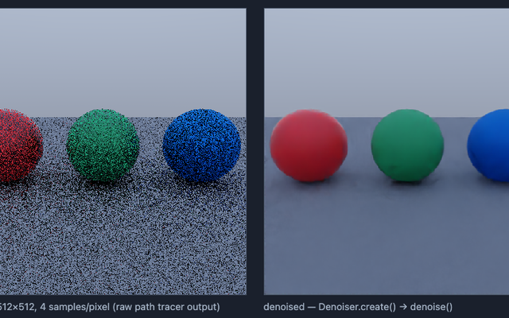
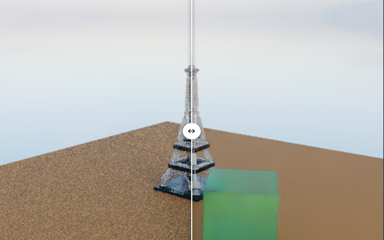
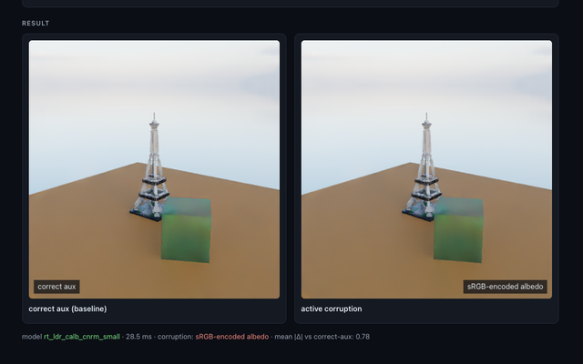
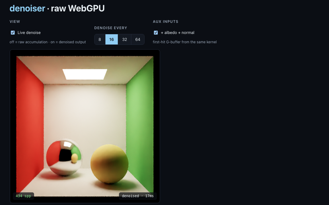
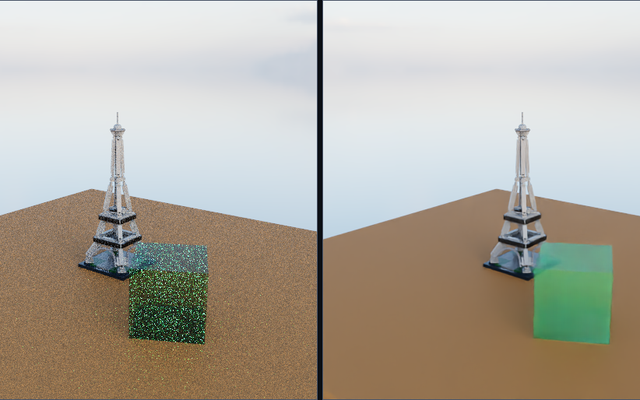
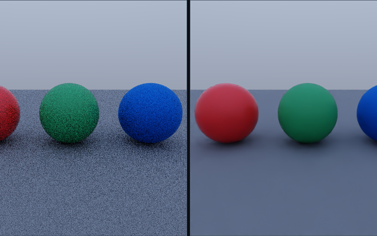
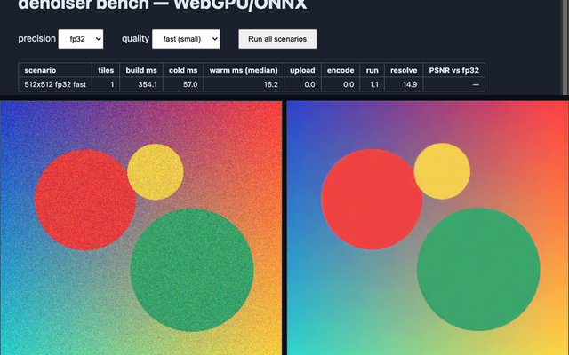

Hello world →
The 10-line story: a noisy render → Denoiser.create() →
denoise() → canvas. No three.js, no build tricks.

Before / after gallery →
Real path-traced scenes at 1–16 samples per pixel: drag the divider, step the noise ladder, toggle albedo+normal guidance live.

Aux inputs, explained →
What the network actually sees — albedo and normal conventions, plus three real bugs you can toggle on and watch degrade the output.

Raw WebGPU →
No framework at all: a single-file WGSL path tracer and the denoiser
sharing one GPUDevice — the copy-paste integration recipe.

LDraw Eiffel Tower →
A LEGO Eiffel Tower on a table: fast raster preview while you orbit, path-trace + denoise the moment the camera comes to rest.

three.js path tracer →
three r185 WebGPUPathTracer and the WebGPU/ONNX denoiser
sharing one GPUDevice — progressive path trace, denoised live.

Benchmark →
The perf harness: cold + warm timings, per-stage stats, and fp16-vs-fp32 PSNR across image sizes. Numbers you can reproduce in your own browser.